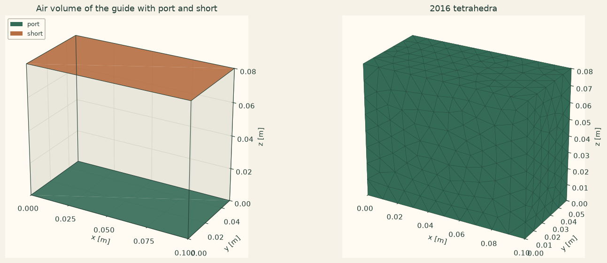

Docs › Examples › TE10 mode of a rectangular waveguide
Electromagnetic waves · 3D
TE10 mode of a rectangular waveguide
The fundamental TE10 mode of a shorted rectangular waveguide, graded against the analytic cutoff and standing wave.
Run locally with OneSimulation. The example downloads are free. Running them requires an activated runtime. Runtime Alpha 0.2.1a7 · CPython 3.13 on macOS (Apple Silicon), Ubuntu 22.04 (x86-64), and Windows x64. Installation and activation · View pilot plans. Scope of the reference checks.

What it computes
OneSimulation solves the frequency-domain Maxwell equations with a numerical waveguide port and perfectly conducting walls on a 3D mesh. The geometry is read from a STEP file with named faces; the script that builds it comes with the notebook.
What it checks
The cutoff frequency c/(2a) is within about 0.35 %; the sin(pi x/a) port mode and the standing wave |sin(beta (l-z))| agree within a few percent.
Geometry
The notebook starts at the import of the CAD file rectangular_waveguide_te10.step: STEP (AP242), readable by any CAD program, with the names of the faces that the boundary conditions use. Put it next to the notebook.


The geometry script
The script rectangular_waveguide_te10_geometry.py builds the geometry with the CAD objects of OneSimulation and writes the file. Change a dimension there, run it, and run the notebook again.
"""Geometry of the OneSimulation example "TE10 mode of a rectangular waveguide".
Builds the air volume of the guide, 100 mm wide, 50 mm high and 80 mm long, with the CAD objects of
OneSimulation and writes rectangular_waveguide_te10.step. The file names three face groups: `port`
(the feed cross-section at z = 0), `short` (the far end) and `walls` (the four side walls).
"""
from onesim.cad.d3 import Box
guide = Box(length=0.100, width=0.050, height=0.080)
faces = guide.boundaries
guide = guide.grouped(
port=faces.z_min, short=faces.z_max, walls=faces.all - faces.z_min - faces.z_max
)
guide.save("rectangular_waveguide_te10.step")The notebook
The complete notebook, cell by cell. Run it to produce the figures and the comparison printout.
An air-filled rectangular waveguide of cross-section \(a\times b\) is fed through a waveguide port at \(z=0\) and terminated by a perfectly conducting short at \(z=\ell\). All other walls are perfect electric conductors. The port mode is not prescribed analytically: OneSimulation solves the transverse eigenvalue problem on the port cross-section numerically and uses the first TE eigenmode as the excitation.
The air volume comes from the CAD file rectangular_waveguide_te10.step with the face groups port, short and walls; the script rectangular_waveguide_te10_geometry.py builds it with the CAD objects of OneSimulation. The frequency-domain Maxwell equations are solved with Nédélec (H(curl)) elements of order 2 on a tetrahedral mesh:
Reference. For the TE\(_{mn}\) modes of a rectangular guide
and, with \(\beta=\sqrt{k_0^2-(\pi/a)^2}\), the shorted guide carries the standing wave \(|E_y(z)|\propto|\sin\beta(\ell-z)|\) without absorbing power.
import numpy as np
from onesim.cad.exchange import load
from onesim.materials import VACUUM_PERMEABILITY, VACUUM_PERMITTIVITY
from onesim.materials.electromagnetic import IsotropicElectromagneticMaterial
from onesim.meshing import TetrahedralMesher
from onesim.numerics import Numerics
from onesim.numerics.fem import FiniteElement, Nedelec
from onesim.numerics.linear import ComplexSparseDirect
from onesim.physics.electromagnetics import (
FrequencyDomainMaxwell,
NumericalWaveguideMode,
PerfectElectricConductor,
WaveguidePort,
)
from onesim.simulation import Problem, Simulation
from onesim.visualization import plots, theme
theme.set()Geometry and mesh
The guide is 100 mm wide and 50 mm high, so TE10 cuts off at about 1.5 GHz and the next modes (TE20, TE01) at 3.0 GHz.
guide = load("rectangular_waveguide_te10.step")
faces = guide.boundaries
a, b, length = guide.size
mesh = TetrahedralMesher(target_size=0.010).generate(guide)
fig = plots.figure(1, 2, size=(13, 5))
plots.geometry(
guide,
selection={"port": faces.port, "short": faces.short},
labels=False,
title="Air volume of the guide with port and short",
ax=fig[0],
)
plots.mesh(
mesh,
groups=("all",),
legend=False,
title=f"{mesh.cell_count} tetrahedra",
ax=fig[1],
)
plots.show()Model
At 2.5 GHz only TE10 propagates. The port carries the first numerical TE eigenmode with 1 W.
frequency = 2.5e9
model = FrequencyDomainMaxwell(
domain=guide.volume,
frequency=frequency,
material=IsotropicElectromagneticMaterial(),
phasor_convention="exp(-i*omega*t)",
amplitude_convention="peak",
)
problem = Problem(
name="TE10 mode of a rectangular waveguide",
geometry=guide,
physics=(model,),
boundary_conditions=(
WaveguidePort(
boundary=faces.port,
physics=model,
mode=NumericalWaveguideMode("TE"),
incident_power=1.0,
),
PerfectElectricConductor(boundary=faces.walls | faces.short, physics=model),
),
)
numerics = Numerics(
spatial=FiniteElement(element=Nedelec(order=2)), linear_solver=ComplexSparseDirect()
)
result = Simulation(problem=problem, mesh=mesh, numerics=numerics).solve_stationary()Comparison with the closed-form TE10 solution
The bound port mode exposes its cutoff frequency and its transverse electric field; the driven 3D solution is sampled along the guide axis.
c0 = 1.0 / np.sqrt(VACUUM_PERMEABILITY * VACUUM_PERMITTIVITY)
cutoff, beta = c0 / (2 * a), np.sqrt(
(2 * np.pi * frequency / c0) ** 2 - (np.pi / a) ** 2
)
port_mode = result.operators[model.model_id].ports[0][1]
x = np.linspace(0.05 * a, 0.95 * a, 19)
port_field = port_mode.electric_field(
np.column_stack((x, np.full_like(x, b / 2), np.zeros_like(x)))
)
mode_shape = port_field[:, 1] / port_field[np.argmax(np.abs(port_field[:, 1])), 1]
z = np.linspace(0.02 * length, 0.98 * length, 25)
amplitude = np.abs(
result.field(model.electric_field).evaluate(
np.column_stack((np.full_like(z, a / 2), np.full_like(z, b / 2), z))
)[:, 1]
)
standing_wave = np.abs(np.sin(beta * (length - z)))
absorbed = result.field(model.absorbed_power_density).integrate()
print(
f"TE10 cutoff: computed {port_mode.cutoff_frequency / 1e9:.4f} GHz, reference {cutoff / 1e9:.4f} GHz, "
f"deviation {100 * abs(port_mode.cutoff_frequency / cutoff - 1):.2f} %"
)
print(
f"port mode shape against sin(pi x / a): largest deviation {np.max(np.abs(mode_shape - np.sin(np.pi * x / a))):.3f} of the peak, "
f"|E_x|/|E_y| = {np.max(np.abs(port_field[:, 0])) / np.max(np.abs(port_field[:, 1])):.3f}"
)
print(
f"standing wave against |sin(beta (l - z))|: largest deviation "
f"{np.max(np.abs(amplitude / amplitude.max() - standing_wave / standing_wave.max())):.3f} of the peak"
)
print(
f"absorbed power in the lossless guide: {absorbed.value:.3e} {absorbed.unit} (incident 1 W)"
)Figure
fine_x, fine_z = np.linspace(0, a, 200), np.linspace(0, length, 300)
fig = plots.figure(1, 2, size=(12, 4.8))
plots.line(
points={"port eigenmode": (1e3 * x, mode_shape.real)},
reference={"sin(pi x / a)": (1e3 * fine_x, np.sin(np.pi * fine_x / a))},
xlabel="position x across the broad wall [mm]",
ylabel="E_y / E_y,max",
title="TE10 mode shape at the port",
ax=fig[0],
)
plots.line(
points={"|E_y| on the axis": (1e3 * z, amplitude / amplitude.max())},
reference={
"|sin(beta (l - z))|": (1e3 * fine_z, np.abs(np.sin(beta * (length - fine_z))))
},
xlabel="position z along the guide [mm]",
ylabel="|E_y| / max",
title=f"Standing wave in the shorted guide at {frequency / 1e9:.1f} GHz",
ax=fig[1],
)
plots.show()Going further
Change the cross-section in rectangular_waveguide_te10_geometry.py and write the STEP file again: the cutoff follows \(c/(2a)\). Ask for NumericalWaveguideMode("TE", order=2) to excite the next mode (raise the drive frequency above its cutoff first), or give the material a finite conductivity to turn the absorbed power on.